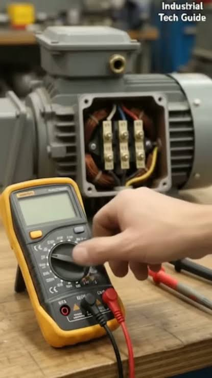

Mantenimiento Industrial
El mantenimiento industrial es el conjunto de actividades técnicas destinadas a conservar los equipos, maquinarias e instalaciones de una planta en perfectas condiciones de operación. Su meta es evitar fallos imprevistos, garantizar la seguridad de los trabajadores y prolongar la vida útil de los activos fijos de la organización.
Estrategias de Gestión del Mantenimiento
- Correctivo: Reparar la máquina una vez que ya se ha averiado. Es reactivo y sumamente costoso.
- Preventivo: Realizar revisiones periódicas programadas por tiempo u horas de uso para evitar fallos (ej. cambios de aceite hidráulico).
- Predictivo: Monitorear variables físicas (vibraciones, temperatura por termografía) para predecir cuándo ocurrirá una falla antes de que suceda.
Impacto Crítico de las Paradas Inesperadas
Cuando una inyectora crítica se detiene por una avería eléctrica inesperada, los costos se disparan de inmediato: se pierde el material que se solidifica dentro del cañón, los operadores quedan inactivos pero cobran su salario, y se rompe la cadena de entregas, dañando la reputación comercial de la empresa.
Ejemplos de Aplicación Práctica
- Limpieza y calibración quincenal de las resistencias eléctricas encargadas de fundir el plástico.
- Análisis de termografía infrarroja en los tableros de control principales para identificar conexiones flojas o sobrecalentadas.
- Sustitución planificada de los sellos hidráulicos desgastados durante los cierres programados de fin de semana.

Análisis Comparativo de Estrategias de Mantenimiento
| Estrategia | Características Clave | Ejemplo de Aplicación en la Planta |
|---|---|---|
| Mantenimiento Correctivo | Alto costo, no planificado, genera caos operativo. | Cambiar el husillo de la extrusora inmediatamente después de que se rompa. |
| Mantenimiento Preventivo | Planificado, basado en el tiempo, reduce paradas drásticas. | Engrase general de las rodilleras mecánicas de cierre de molde cada 500 horas. |
| Mantenimiento Predictivo | Basado en condiciones reales de variables analizadas. | Medición de la vibración del motor principal para programar el cambio de rodamientos. |